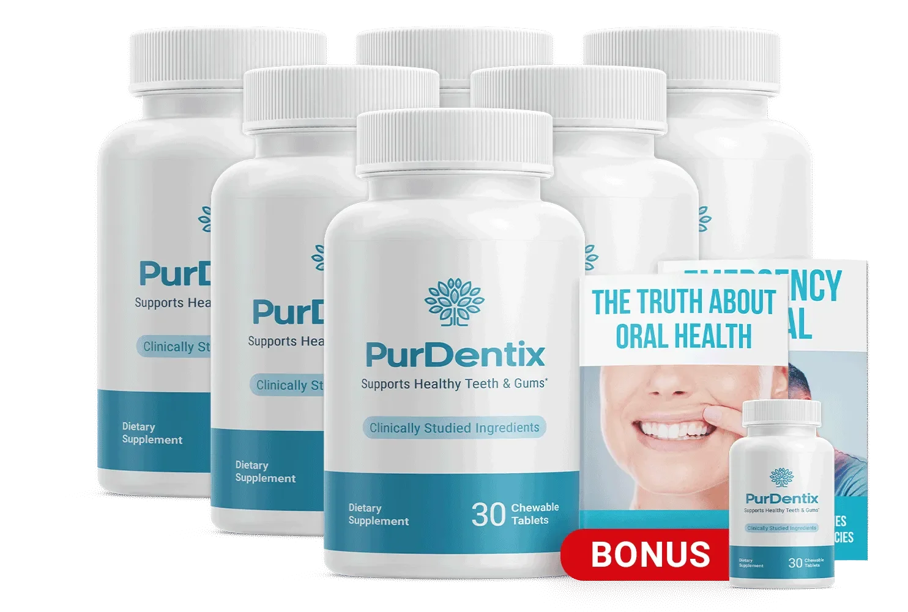

PurDentix Chewables – 30-Day Supply, Daily Oral Health Support.
PurDentix is a natural oral microbiome support supplement created for adults who want to maintain healthier teeth, stronger gums, and fresher breath as part of their daily oral wellness routine. In the USA, many people are looking beyond basic brushing and flossing to support a balanced mouth environment from within. PurDentix focuses on daily oral health support by helping maintain beneficial oral bacteria and a cleaner mouth. Its purpose is linked with gum health support, fresh breath support, cleaner teeth, and a healthier-looking smile without making the daily routine difficult.
PurDentix offers a simple approach to oral wellness for people dealing with concerns such as unpleasant breath, poor oral balance, or gums that need extra daily support. By focusing on oral microbiome balance, it may help create better conditions for long-term teeth and gum wellness. USA adults can include PurDentix in a regular oral care routine alongside brushing, flossing, and routine dental visits. The main goal is to support fresh breath, healthy gums, cleaner teeth, and everyday mouth wellness through consistent daily care.
| Detail | Value |
|---|---|
| Supply Per Bottle | 30 days |
| Supplement Type | Oral probiotic supplement |
| Oral Health Support | Gums, teeth, and oral microbiome |
| Daily Focus | Fresh breath and oral balance |
| Suitable For | Adults |
| Lifestyle Support | Daily oral hygiene routine |
PurDentix should be used according to the daily serving instructions printed on the product label. The chewable oral probiotic format makes it easy to include in an existing oral wellness routine. Consistent use may provide ongoing support for beneficial oral bacteria, gum wellness, fresh breath, and oral microbiome balance. Users should follow the suggested daily amount and should not take additional servings without professional guidance.
Daily PurDentix use should complement regular brushing, flossing, and dental checkups. Individual experiences may vary depending on diet, oral hygiene habits, and everyday lifestyle. Following a consistent mouth care routine may help support cleaner teeth, healthier gums, balanced oral bacteria, and lasting breath freshness.
PurDentix is intended for adult oral wellness support. Users should carefully read the label and follow the stated daily serving directions. Taking more than the suggested amount is not advised. Anyone who experiences unusual discomfort after using PurDentix should discontinue use and speak with a qualified healthcare professional.
Pregnant or breastfeeding individuals, people with ongoing medical concerns, and those taking prescription medicines should consult a healthcare provider before using an oral probiotic supplement. This helps determine whether PurDentix is suitable for personal wellness needs and current health circumstances.
According to the available PurDentix product details, orders include a 60-day refund period. Buyers should check the current return rules, refund qualifications, and submission process on the seller's website before purchasing.
What is PurDentix?
PurDentix is an oral probiotic supplement for adults who want daily support for healthy gums, cleaner teeth, fresh breath, and oral microbiome balance. It focuses on maintaining beneficial bacteria within the mouth. PurDentix USA users can include it in their regular oral hygiene routine alongside brushing, flossing, and routine dental care for ongoing mouth wellness support.
How does PurDentix support oral health?
PurDentix supports oral health by focusing on the balance of beneficial bacteria in the mouth. A balanced oral microbiome may contribute to healthier gums, fresher breath, and a cleaner mouth environment. With regular use, PurDentix oral probiotic support may complement daily brushing and flossing while helping adults in the USA maintain consistent oral wellness and mouth freshness.
What are the main benefits of PurDentix?
The main PurDentix benefits include support for healthy gums, fresh breath, cleaner teeth, beneficial oral bacteria, and oral microbiome balance. It may also help maintain a fresh and comfortable mouth throughout the day. These oral wellness benefits make PurDentix a daily support option for USA adults seeking to improve their regular teeth and gum care routine.
How should PurDentix be used?
PurDentix should be taken according to the serving directions provided on the product label. Users should follow the suggested daily amount and maintain regular use. For better oral care support, PurDentix can be included alongside brushing, flossing, healthy eating habits, and routine dental checkups. Taking more than the listed serving amount is not recommended without professional advice.
Who can use PurDentix?
PurDentix is intended for adults interested in supporting gum health, fresh breath, cleaner teeth, and balanced oral bacteria. It may suit USA adults looking for additional oral probiotic support within their everyday mouth care routine. Pregnant or breastfeeding individuals and people using prescription medicines should speak with a healthcare professional before adding any new oral wellness supplement to their routine.
Can PurDentix help support fresh breath?
PurDentix may support naturally fresh breath by helping maintain a balanced oral microbiome and beneficial mouth bacteria. Poor bacterial balance can influence how fresh the mouth feels. Daily oral probiotic support, combined with proper brushing, flossing, hydration, and dental care, may help USA users maintain better breath freshness and a cleaner-feeling mouth throughout their normal daily activities.
Does PurDentix support healthy gums?
Yes, PurDentix focuses on daily gum health support through oral microbiome balance. Beneficial bacteria may help maintain a healthier mouth environment and support normal gum wellness. Regular PurDentix use should complement proper brushing, flossing, and professional dental care. Individual experiences can vary based on oral hygiene habits, diet, lifestyle choices, and existing mouth care routines.
How long does it take to notice PurDentix results?
PurDentix results may differ from one person to another. Some users may notice changes in mouth freshness earlier, while oral microbiome and gum wellness support may require consistent daily use. Diet, brushing habits, flossing, hydration, and overall oral hygiene can influence individual experiences. Following the product directions regularly is important when evaluating PurDentix oral health support over time.
Is PurDentix a replacement for brushing and flossing?
No. PurDentix is not a replacement for brushing, flossing, or routine dental visits. It provides additional oral probiotic support for beneficial bacteria, fresh breath, gum wellness, and oral microbiome balance. USA users should continue standard dental hygiene practices while including PurDentix in their daily oral care schedule. Regular dental checkups remain an important part of maintaining healthy teeth and gums.
Where can PurDentix be purchased in the USA?
PurDentix availability and purchasing options should be checked through the current official product sales page. USA customers should review product details, pricing, package options, and order terms before purchasing. Buying through the listed authorized sales source may help customers receive the correct PurDentix oral probiotic product and access the latest information about ordering, shipping, and current product availability.